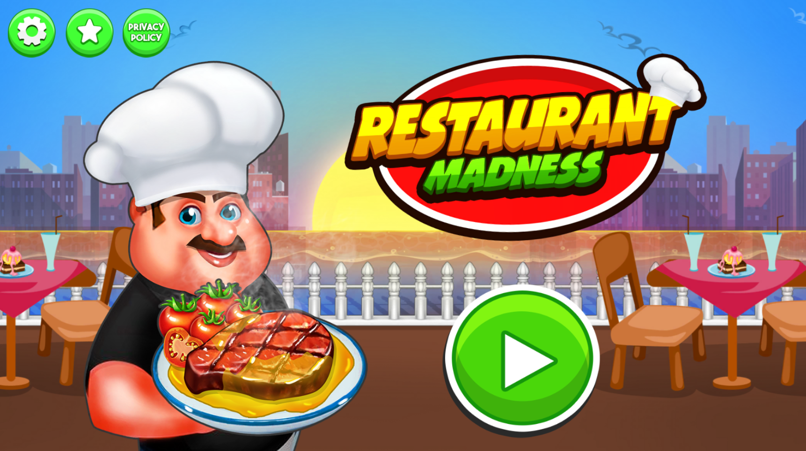
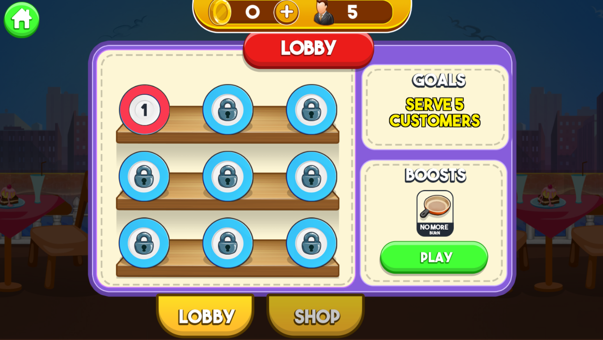

← Back to projects
CASUAL · COOKING
Restaurant Food Cooking Games
A restaurant cooking and time-management game focused on preparing food, serving customers, and managing a busy kitchen.
UnityC#CookingCasual
Open APKPure listing ↗
1 / 1
Project showcase · additional screenshots can be added to this project folder.
Gameplay Video
Watch the project in action

▶ GAMEPLAY // WATCH ON YOUTUBEProject Overview
This project showcases a restaurant-focused cooking experience built around food preparation, customer orders, serving and time-based kitchen gameplay.
It is presented in my professional Unity portfolio as a casual cooking project. Project-specific implementation details can be expanded when additional screenshots or gameplay material are added.